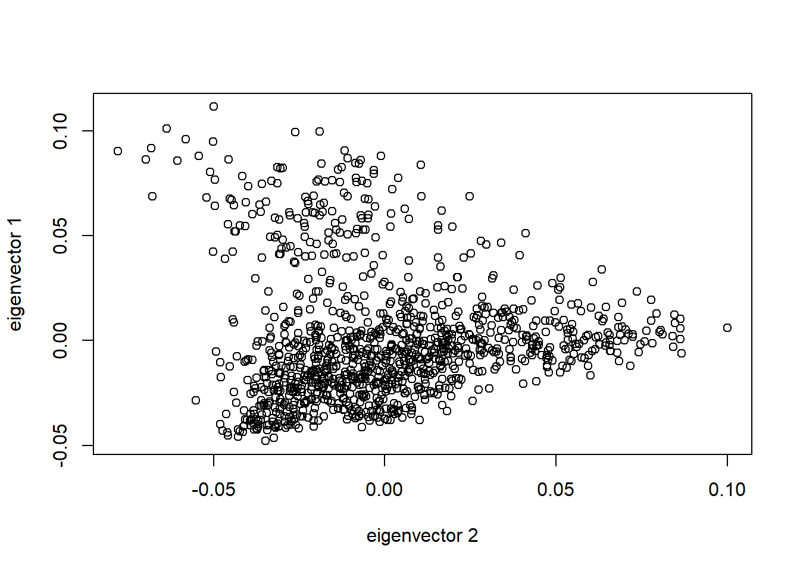
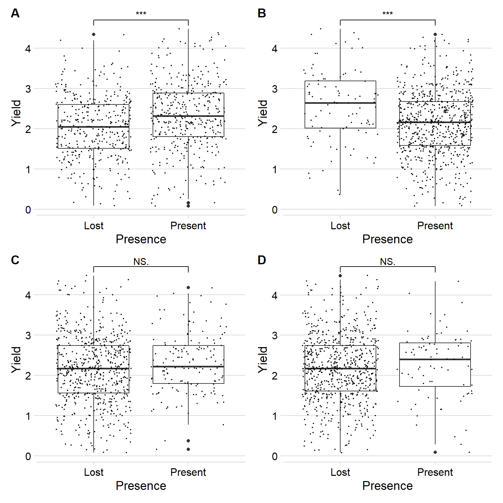

Last updated: 2021-03-30
Checks: 7 0
Knit directory: R_gene_analysis/
This reproducible R Markdown analysis was created with workflowr (version 1.6.2.9000). The Checks tab describes the reproducibility checks that were applied when the results were created. The Past versions tab lists the development history.
Great! Since the R Markdown file has been committed to the Git repository, you know the exact version of the code that produced these results.
Great job! The global environment was empty. Objects defined in the global environment can affect the analysis in your R Markdown file in unknown ways. For reproduciblity it’s best to always run the code in an empty environment.
The command set.seed(20200917) was run prior to running the code in the R Markdown file. Setting a seed ensures that any results that rely on randomness, e.g. subsampling or permutations, are reproducible.
Great job! Recording the operating system, R version, and package versions is critical for reproducibility.
Nice! There were no cached chunks for this analysis, so you can be confident that you successfully produced the results during this run.
Great job! Using relative paths to the files within your workflowr project makes it easier to run your code on other machines.
Great! You are using Git for version control. Tracking code development and connecting the code version to the results is critical for reproducibility.
The results in this page were generated with repository version bc094e2. See the Past versions tab to see a history of the changes made to the R Markdown and HTML files.
Note that you need to be careful to ensure that all relevant files for the analysis have been committed to Git prior to generating the results (you can use wflow_publish or wflow_git_commit). workflowr only checks the R Markdown file, but you know if there are other scripts or data files that it depends on. Below is the status of the Git repository when the results were generated:
Ignored files:
Ignored: .Rhistory
Ignored: .Rproj.user/
Ignored: analysis/figure/
Untracked files:
Untracked: data/Brec_R1.txt
Untracked: data/Brec_R2.txt
Untracked: data/CR15_R1.txt
Untracked: data/CR15_R2.txt
Untracked: data/CR_14_R1.txt
Untracked: data/CR_14_R2.txt
Untracked: data/KS_R1.txt
Untracked: data/KS_R2.txt
Untracked: data/NBS_PAV.txt.gz
Untracked: data/NLR_PAV_GD.txt
Untracked: data/NLR_PAV_GM.txt
Untracked: data/PAVs_newick.txt
Untracked: data/PPR1.txt
Untracked: data/PPR2.txt
Untracked: data/SNPs_newick.txt
Untracked: data/bac.txt
Untracked: data/brown.txt
Untracked: data/cy3.txt
Untracked: data/cy5.txt
Untracked: data/early.txt
Untracked: data/flowerings.txt
Untracked: data/foregeye.txt
Untracked: data/height.txt
Untracked: data/late.txt
Untracked: data/mature.txt
Untracked: data/motting.txt
Untracked: data/mvp.kin.bin
Untracked: data/mvp.kin.desc
Untracked: data/oil.txt
Untracked: data/pdh.txt
Untracked: data/protein.txt
Untracked: data/rust_tan.txt
Untracked: data/salt.txt
Untracked: data/seedq.txt
Untracked: data/seedweight.txt
Untracked: data/stem_termination.txt
Untracked: data/sudden.txt
Untracked: data/virus.txt
Note that any generated files, e.g. HTML, png, CSS, etc., are not included in this status report because it is ok for generated content to have uncommitted changes.
These are the previous versions of the repository in which changes were made to the R Markdown (analysis/gwas.Rmd) and HTML (docs/gwas.html) files. If you’ve configured a remote Git repository (see ?wflow_git_remote), click on the hyperlinks in the table below to view the files as they were in that past version.
| File | Version | Author | Date | Message |
|---|---|---|---|---|
| Rmd | bc094e2 | Philipp Bayer | 2021-03-30 | wflow_publish(files = c(“analysis/gwas.Rmd”)) |
| html | d88c271 | Philipp Bayer | 2021-03-30 | Build site. |
| Rmd | c36de75 | Philipp Bayer | 2021-03-30 | wflow_publish(c(“analysis/gwas.Rmd”)) |
| html | 51edc1f | Philipp Bayer | 2021-03-30 | Build site. |
| Rmd | e1faf81 | Philipp Bayer | 2021-03-30 | wflow_publish(c(“analysis/gwas.Rmd”, “analysis/index.Rmd”)) |
| html | c769673 | Philipp Bayer | 2021-03-29 | Build site. |
| Rmd | 764ad7b | Philipp Bayer | 2021-03-29 | wflow_publish(“analysis/gwas.Rmd”) |
| Rmd | bd5506f | Philipp Bayer | 2021-03-29 | missing commits |
| html | 2844fd3 | Philipp Bayer | 2021-02-09 | Add changes, add missing yield |
| html | e519122 | Philipp Bayer | 2020-12-11 | Build site. |
| html | 83dc49a | Philipp Bayer | 2020-12-11 | Trace deleted files |
| Rmd | dae157b | Philipp Bayer | 2020-09-24 | Update of analysis |
| html | dae157b | Philipp Bayer | 2020-09-24 | Update of analysis |
Let’s run a GWAS via GAPIT using the NLR genes as input, and the PCs calculated using SNPs
library(GAPIT3)
library(SNPRelate)
library(tidyverse)
library(ggsignif)
library(cowplot)
library(patchwork)First, we have to make the principal components - making them based on NLR genes alone is probably garbage. Let’s make them based on all publicly available SNPs from here.
I ran the following on a bigger server which is why it’s marked as not to run when I rerun workflowr.
if (!file.exists('data/SNPs_lee.id.biallic_maf_0.05_geno_0.1.vcf.gz')) {
download.file('https://research-repository.uwa.edu.au/files/89232545/SNPs_lee.id.biallic_maf_0.05_geno_0.1.vcf.gz', 'data/SNPs_lee.id.biallic_maf_0.05_geno_0.1.vcf.gz')
}
#We have to convert the big vcf file
if (!file.exists("data/snp.gds")) {
vcf.fn <- 'data/SNPs_lee.id.biallic_maf_0.05_geno_0.1.vcf.gz'
snpgdsVCF2GDS(vcf.fn, "data/snp.gds", method="biallelic.only")
}
genofile <- snpgdsOpen('data/snp.gds')
# Let's prune the SNPs based on 0.2 LD
snpset <- snpgdsLDpruning(genofile, ld.threshold=0.2, autosome.only=F)
snpset.id <- unlist(unname(snpset))
# And now let's run the PCA
pca <- snpgdsPCA(genofile, snp.id=snpset.id, num.thread=2, autosome.only=F)
saveRDS(pca, 'data/pca.rds')OK let’s load the results I made on the remote server and saved in a file:
# load PCA
pca <- readRDS('data/pca.rds')A quick diagnostic plot
tab <- data.frame(sample.id = pca$sample.id,
EV1 = pca$eigenvect[,1], # the first eigenvector
EV2 = pca$eigenvect[,2], # the second eigenvector
stringsAsFactors = FALSE)
plot(tab$EV2, tab$EV1, xlab="eigenvector 2", ylab="eigenvector 1")
head(tab) sample.id EV1 EV2
1 AB-01 -0.03587935 0.008552839
2 AB-02 -0.03681818 0.010897831
3 BR-01 -0.01975551 -0.016854610
4 BR-02 -0.01651350 -0.015271782
5 BR-03 -0.01702049 -0.018778840
6 BR-04 -0.01639033 -0.021407320Alright, now we have SNP-based principal components. We’ll use the first two as our own covariates in GAPIT.
I wrote a Python script which takes the NLR-only PAV table and turns that into HapMap format with fake SNPs, see code/transformToGAPIT.py.
myY <- read.table('data/yield.txt', head = TRUE)
myGD <- read.table('data/NLR_PAV_GD.txt', head = TRUE)
myGM <- read.table('data/NLR_PAV_GM.txt', head = TRUE)GAPIT prints a LOT of stuff so I turn that off here, what’s important are all the output files.
myGAPIT <- GAPIT(
Y=myY[,c(1,2)],
CV = tab,
GD = myGD,
GM = myGM,
PCA.total = 0, # turn off PCA calculation as I use my own based on SNPs
model = c('GLM', 'MLM', 'MLMM', 'FarmCPU')
)if (! dir.exists('output/GAPIT')){
dir.create('output/GAPIT')
}R doesn’t have an in-built function to move files, so I copy and delete the output files here. There’s a package which adds file-moving but I’m not adding a whole dependency just for one convenience function, I’m not a Node.js person ;)
for(file in list.files('.', pattern='GAPIT*')) {
file.copy(file, 'output/GAPIT')
file.remove(file)
}Let’s make a table of the statistically significantly associated SNPs.
results_files <- list.files('output/GAPIT/', pattern='*GWAS.Results.csv', full.names = T)Let’s use FDR < 0.05 as cutoff
results_df <- NULL
for(i in seq_along(results_files)) {
this_df <- read_csv(results_files[i])
filt_df <- this_df %>% filter(`FDR_Adjusted_P-values` < 0.05)
# pull the method name out and add to dataframe
this_method <- str_split(results_files[i], "\\.")[[1]][2]
filt_df <- filt_df %>% add_column(Method = this_method, .before = 'SNP')
if (is.null(results_df)) {
results_df <- filt_df
} else {
results_df <- rbind(results_df, filt_df)
}
}Parsed with column specification:
cols(
SNP = col_character(),
Chromosome = col_double(),
Position = col_double(),
P.value = col_double(),
maf = col_double(),
nobs = col_double(),
Rsquare.of.Model.without.SNP = col_logical(),
Rsquare.of.Model.with.SNP = col_logical(),
`FDR_Adjusted_P-values` = col_double(),
effect = col_double()
)Parsed with column specification:
cols(
SNP = col_character(),
Chromosome = col_double(),
Position = col_double(),
P.value = col_double(),
maf = col_double(),
nobs = col_double(),
Rsquare.of.Model.without.SNP = col_double(),
Rsquare.of.Model.with.SNP = col_double(),
`FDR_Adjusted_P-values` = col_double(),
effect = col_double()
)
Parsed with column specification:
cols(
SNP = col_character(),
Chromosome = col_double(),
Position = col_double(),
P.value = col_double(),
maf = col_double(),
nobs = col_double(),
Rsquare.of.Model.without.SNP = col_double(),
Rsquare.of.Model.with.SNP = col_double(),
`FDR_Adjusted_P-values` = col_double(),
effect = col_double()
)Parsed with column specification:
cols(
SNP = col_character(),
Chromosome = col_double(),
Position = col_double(),
P.value = col_double(),
maf = col_double(),
nobs = col_double(),
Rsquare.of.Model.without.SNP = col_logical(),
Rsquare.of.Model.with.SNP = col_logical(),
`FDR_Adjusted_P-values` = col_double(),
effect = col_logical()
)results_df %>% knitr::kable()| Method | SNP | Chromosome | Position | P.value | maf | nobs | Rsquare.of.Model.without.SNP | Rsquare.of.Model.with.SNP | FDR_Adjusted_P-values | effect |
|---|---|---|---|---|---|---|---|---|---|---|
| FarmCPU | GlymaLee.02G228600.1.p | 2 | 49198872 | 0.0000038 | 0.0013004 | 769 | NA | NA | 0.0018691 | -1.7185122 |
| FarmCPU | UWASoyPan04354 | 22 | 277 | 0.0000373 | 0.1040312 | 769 | NA | NA | 0.0090673 | 0.1505357 |
| FarmCPU | UWASoyPan00316 | 22 | 405 | 0.0000813 | 0.1235371 | 769 | NA | NA | 0.0131697 | -0.1361126 |
| FarmCPU | GlymaLee.01G030900.1.p | 1 | 3567950 | 0.0001897 | 0.4928479 | 769 | NA | NA | 0.0230510 | 0.0837741 |
| FarmCPU | UWASoyPan00772 | 22 | 326 | 0.0002724 | 0.1976593 | 769 | NA | NA | 0.0264748 | 0.1073770 |
| FarmCPU | GlymaLee.14G022000.1.p | 14 | 1789365 | 0.0004215 | 0.2236671 | 769 | NA | NA | 0.0341436 | -0.0953602 |
| GLM | GlymaLee.02G228600.1.p | 2 | 49198872 | 0.0000000 | 0.0013004 | 769 | 0.3795503 | 0.4064602 | 0.0000058 | -1.9354957 |
| GLM | UWASoyPan04354 | 22 | 277 | 0.0000150 | 0.1040312 | 769 | 0.3795503 | 0.3949224 | 0.0036512 | 0.1706430 |
| GLM | UWASoyPan00772 | 22 | 326 | 0.0000315 | 0.1976593 | 769 | 0.3795503 | 0.3937506 | 0.0051105 | 0.1291152 |
| GLM | UWASoyPan00316 | 22 | 405 | 0.0000446 | 0.1235371 | 769 | 0.3795503 | 0.3932066 | 0.0054160 | -0.1498671 |
| GLM | GlymaLee.16G111300.1.p | 16 | 30996392 | 0.0001209 | 0.0676203 | 769 | 0.3795503 | 0.3916447 | 0.0117547 | 0.1830838 |
| GLM | UWASoyPan00022 | 22 | 958 | 0.0003783 | 0.0364109 | 769 | 0.3795503 | 0.3898773 | 0.0267416 | 0.2285028 |
| GLM | GlymaLee.01G030900.1.p | 1 | 3567950 | 0.0003852 | 0.4928479 | 769 | 0.3795503 | 0.3898498 | 0.0267416 | 0.0861666 |
| MLM | GlymaLee.02G228600.1.p | 2 | 49198872 | 0.0000005 | 0.0013004 | 769 | 0.4220320 | 0.4413330 | 0.0002584 | -1.6924714 |
| MLMM | GlymaLee.02G228600.1.p | 2 | 49198872 | 0.0000003 | 0.0013004 | 769 | NA | NA | 0.0001373 | NA |
Ah beautiful, one NLR gene found by all methods, and a bunch of extra pangenome genes found by FarmCPU/GLM. However the one gene found by all methods has a horrible MAF so we’ll probably end up ignoring that.
results_df %>% group_by(SNP) %>% count() %>% arrange(n)# A tibble: 8 x 2
# Groups: SNP [8]
SNP n
<chr> <int>
1 GlymaLee.14G022000.1.p 1
2 GlymaLee.16G111300.1.p 1
3 UWASoyPan00022 1
4 GlymaLee.01G030900.1.p 2
5 UWASoyPan00316 2
6 UWASoyPan00772 2
7 UWASoyPan04354 2
8 GlymaLee.02G228600.1.p 4candidates <- results_df %>%
group_by(SNP) %>%
count() %>%
filter(n >= 2)
candidates %>% knitr::kable()| SNP | n |
|---|---|
| GlymaLee.01G030900.1.p | 2 |
| GlymaLee.02G228600.1.p | 4 |
| UWASoyPan00316 | 2 |
| UWASoyPan00772 | 2 |
| UWASoyPan04354 | 2 |
Let’s focus on genes found by more than one method.
This particular R-gene GlymaLee.02G228600.1.p seems to have a strong negative impact on yield (effect -1.69 in MLM, -1.94 in GLM, -1.72 in FarmCPU) but it also has a horrible MAF, normally this would get filtered in SNPs but we don’t have SNPs here. Let’s plot the yield for individuals who have vs those who don’t have those genes that appear in more than one method.
pav_table <- read_tsv('./data/soybean_pan_pav.matrix_gene.txt.gz')Parsed with column specification:
cols(
.default = col_double(),
Individual = col_character()
)See spec(...) for full column specifications.yield <- read_tsv('./data/yield.txt')Parsed with column specification:
cols(
Line = col_character(),
Yield = col_double()
)pav_table %>%
filter(Individual == 'GlymaLee.02G228600.1.p') %>%
pivot_longer(!Individual, names_to = 'Line', values_to = 'Presence') %>%
inner_join(yield) %>% arrange(Presence) %>% head()Joining, by = "Line"# A tibble: 6 x 4
Individual Line Presence Yield
<chr> <chr> <dbl> <dbl>
1 GlymaLee.02G228600.1.p USB-762 0 2.88
2 GlymaLee.02G228600.1.p AB-01 1 1.54
3 GlymaLee.02G228600.1.p AB-02 1 1.3
4 GlymaLee.02G228600.1.p For 1 3.34
5 GlymaLee.02G228600.1.p HN001 1 3.54
6 GlymaLee.02G228600.1.p HN005 1 2.15OK this gene is ‘boring’ - it’s lost only in a single line, and we can’t trust that. We’ll remove it.
pav_table %>%
filter(Individual == 'GlymaLee.02G228600.1.p') %>%
pivot_longer(!Individual, names_to = 'Line', values_to = 'Presence') %>%
inner_join(yield) %>%
summarise(median_y= median(Yield))Joining, by = "Line"# A tibble: 1 x 1
median_y
<dbl>
1 2.18At least this particular line with the lost gene has slightly higher yield than the median? but soooo many different reasons… Let’s remove this gene as MAF < 5%.
Let’s check the other genes.
candidates <- candidates %>%
filter(SNP != 'GlymaLee.02G228600.1.p')plots <- list()
for(i in 1:nrow(candidates)) {
this_cand = candidates[i,]
p <- pav_table %>%
filter(Individual == this_cand$SNP) %>%
pivot_longer(!Individual, names_to = 'Line', values_to = 'Presence') %>%
inner_join(yield) %>%
mutate(Presence = case_when(
Presence == 0.0 ~ 'Lost',
Presence == 1.0 ~ 'Present'
)) %>%
ggplot(aes(x=Presence, y = Yield, group=Presence)) +
geom_boxplot() +
geom_jitter(alpha=0.9, size=0.4) +
geom_signif(comparisons = list(c('Lost', 'Present')),
map_signif_level = T) +
theme_minimal_hgrid()
#xlab(paste('Presence', str_replace(this_cand$SNP, '.1.p',''))) # make the gene name a bit nicer
plots[[i]] <- p
}Joining, by = "Line"
Joining, by = "Line"
Joining, by = "Line"
Joining, by = "Line"wrap_plots(plots) +
plot_annotation(tag_levels = 'A')
Four nice plots we have now, we’ll use those as supplementary. It’s interesting how the reference gene has a positive impact on yield, the pangenome extra gene has a negative impact, and the other two don’t do much. Then again there are many reasons why we see this outcome.
For myself, the four labels: GlymaLee.01G030900.1.p, UWASoyPan00316, UWASoyPan00772, UWASoyPan04354
I also need a presence/absence percentage for all candidates
big_t <- NULL
for(i in 1:nrow(candidates)) {
this_cand = candidates[i,]
t <- pav_table %>%
filter(Individual == this_cand$SNP) %>%
pivot_longer(!Individual, names_to = 'Line', values_to = 'Presence') %>%
dplyr::select(Presence) %>%
table() %>% tibble()
t <- t %>% add_column(Presence=c(0,1), .before = '.')
names(t) <- c('Presence', this_cand$SNP)
t <- pivot_longer(t, -Presence, values_to = 'Count')
t <- t[,c('name', 'Presence', 'Count')]
if(is.null(big_t)) {
big_t <- t
} else {
big_t <- rbind(big_t, t)
}
}
big_t %>% group_by(name) %>%
mutate(Count = as.integer(Count)) %>%
mutate(perc_Count = Count/1110*100 ) %>%
knitr::kable()| name | Presence | Count | perc_Count |
|---|---|---|---|
| GlymaLee.01G030900.1.p | 0 | 462 | 41.62162 |
| GlymaLee.01G030900.1.p | 1 | 648 | 58.37838 |
| UWASoyPan00316 | 0 | 166 | 14.95495 |
| UWASoyPan00316 | 1 | 944 | 85.04505 |
| UWASoyPan00772 | 0 | 829 | 74.68468 |
| UWASoyPan00772 | 1 | 281 | 25.31532 |
| UWASoyPan04354 | 0 | 949 | 85.49550 |
| UWASoyPan04354 | 1 | 161 | 14.50450 |
sessionInfo()R version 3.6.3 (2020-02-29)
Platform: x86_64-w64-mingw32/x64 (64-bit)
Running under: Windows 10 x64 (build 17134)
Matrix products: default
locale:
[1] LC_COLLATE=English_Australia.1252 LC_CTYPE=English_Australia.1252
[3] LC_MONETARY=English_Australia.1252 LC_NUMERIC=C
[5] LC_TIME=English_Australia.1252
attached base packages:
[1] compiler parallel stats graphics grDevices utils datasets
[8] methods base
other attached packages:
[1] biganalytics_1.1.21 biglm_0.9-2 DBI_1.1.0
[4] foreach_1.4.8 bigmemory_4.5.36 scatterplot3d_0.3-41
[7] EMMREML_3.1 Matrix_1.2-18 ape_5.3
[10] genetics_1.3.8.1.2 mvtnorm_1.1-1 MASS_7.3-51.6
[13] gtools_3.8.1 gdata_2.18.0 combinat_0.0-8
[16] LDheatmap_0.99-8 gplots_3.0.3 multtest_2.42.0
[19] Biobase_2.46.0 BiocGenerics_0.32.0 patchwork_1.0.0
[22] cowplot_1.0.0 ggsignif_0.6.0 forcats_0.5.0
[25] stringr_1.4.0 dplyr_1.0.0 purrr_0.3.4
[28] readr_1.3.1 tidyr_1.1.0 tibble_3.0.2
[31] ggplot2_3.3.2 tidyverse_1.3.0 SNPRelate_1.20.1
[34] gdsfmt_1.22.0 GAPIT3_3.1.0 workflowr_1.6.2.9000
loaded via a namespace (and not attached):
[1] bigmemory.sri_0.1.3 colorspace_1.4-1 ellipsis_0.3.1
[4] rprojroot_1.3-2 fs_1.5.0.9000 rstudioapi_0.11
[7] farver_2.0.3 fansi_0.4.1 lubridate_1.7.9
[10] xml2_1.3.2 codetools_0.2-16 splines_3.6.3
[13] knitr_1.29 jsonlite_1.7.1 broom_0.5.6
[16] dbplyr_1.4.4 httr_1.4.2 backports_1.1.10
[19] assertthat_0.2.1 cli_2.0.2 later_1.1.0.1
[22] htmltools_0.5.0 tools_3.6.3 gtable_0.3.0
[25] glue_1.4.2 Rcpp_1.0.5 cellranger_1.1.0
[28] vctrs_0.3.1 nlme_3.1-148 iterators_1.0.12
[31] xfun_0.17 ps_1.3.4 rvest_0.3.5
[34] lifecycle_0.2.0 getPass_0.2-2 scales_1.1.1
[37] hms_0.5.3 promises_1.1.1 yaml_2.2.1
[40] stringi_1.5.3 highr_0.8 caTools_1.18.0
[43] rlang_0.4.7 pkgconfig_2.0.3 bitops_1.0-6
[46] evaluate_0.14 lattice_0.20-41 labeling_0.3
[49] processx_3.4.4 tidyselect_1.1.0 magrittr_1.5
[52] R6_2.4.1 generics_0.0.2 pillar_1.4.4
[55] haven_2.3.1 whisker_0.4 withr_2.2.0
[58] survival_3.2-3 modelr_0.1.8 crayon_1.3.4
[61] KernSmooth_2.23-17 utf8_1.1.4 rmarkdown_2.3
[64] grid_3.6.3 readxl_1.3.1 blob_1.2.1
[67] callr_3.4.4 git2r_0.27.1 reprex_0.3.0
[70] digest_0.6.25 httpuv_1.5.4 stats4_3.6.3
[73] munsell_0.5.0